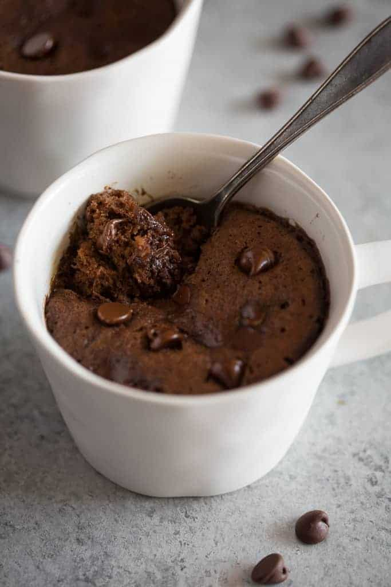

Instant Mug Cake Recipe

In under 5 minutes, you can have the Best-Ever Chocolate Mug Cake recipe imaginable! Using only a small amount of ingredients you're likely to have on-hand, just mix in a mug and bake in the microwave!
Ingredients
- ¼ cup white sugar
- 2 tablespoons unsweetened cocoa powder
- ⅛ teaspoon baking soda
- ⅛ teaspoon salt
- 3 tablespoons milk
- 2 tablespoons canola oil
- 1 tablespoon water
- ¼ teaspoon vanilla extract
Instructions
- Mix flour, sugar, cocoa powder, baking soda, and salt in a large microwave-safe mug
- Stir in milk, canola oil, water, and vanilla extract.
- Cook in microwave until cake is done in the middle, about 1 minute 45 seconds.
- For a healthier version, use 1 1/2 tablespoons of plain unsweetened applesauce and use 3 tablespoons plus 1 teaspoon water instead of the milk.